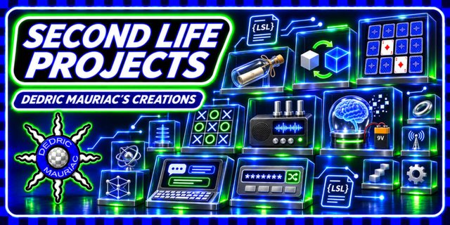

Second Life Projects
LSL scripts as Dedric Mauriac

A collection of Linden Scripting Language projects made as Dedric Mauriac: a prim copier and exporter, and a message in a bottle.
Executive summary
Why it exists
Old Second Life work kept together in one place, from about 2012.
Outcome
Not maintained. Copy a script into a prim's contents in Second Life to try it.
My role
Author.
Technical overview
How it works
PrimExporter: scripts that copy a prim's parameters from a source object to a destination object (source prim, copier, exporter, destination prim and server). Bottled Message: a bottle that gives its message as a text file to whoever touches it. A Notepad++ project file groups the scripts.